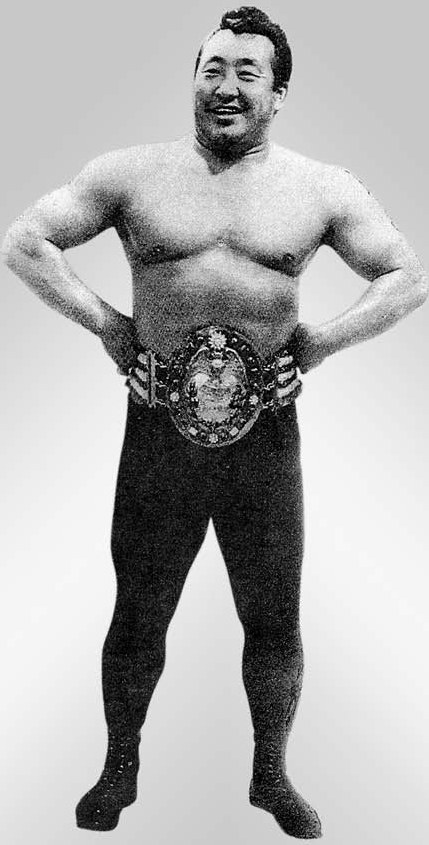

Предисловие
Оцифровано для VSplanet.net

Герой этой книги, король мировой профессиональной борьбы Рек То Сан (настоящее имя — Ким Син Рак) прожил всю свою жизнь с чувствами национальной гордости и достоинства как кореец. Я познакомился с ним 6 октября 1957 года. В этот воскресный день должна была состояться на стадионе «Коракуэн» в Токио схватка между Рек То Саном и американцем Ру Тхезом за звание чемпиона мира по профессиональной борьбе. К сожалению, соревнование не проходило из-за дождя. Мы с коллегами посетили на обратном пути квартиру Рек То Сана. Он радушно встретил нас, корейских студентов в Японии. Рек То Сан заявил, что он тоже кореец и взволнованным, а иногда возмущенным голосом рассказывал нам о том, каким образом он попал в Японию.
. . . Это случилось во второй половине 30-х годов, когда японский империализм оккупировал Корею в качестве колонии. Японцы насильственно забрали Рек То Сана, отличавшегося необыкновенной физической силой и здоровым телосложением, в Японию и заставили его взять себе японское имя. Тогда ему не минуло и 20 лет. Он подвергался всяким национальным оскорблениям только потому, что он кореец. Рек То Сан не раз занимал первое место в японской национальной борьбе, но не мог прославить свое имя. Так он с обидой и гневом вступил в ряды профессиональных борцов. За 10 с лишним лет он победил известных борцов Японии, США и многих других капиталистических стран, завоевав несколько раз подряд звание чемпиона мира по профессиональной борьбе, и стал «королем» этого вида спорта. Это была наша большая гордость. Встречаясь неоднократно с Рек То Саном и смотря непосредственно или через телевидение его игры, я ощущал у него высокий национальный дух корейца. И я решил написать эти строки для читателей мира.
От автора
Январь 1989 года